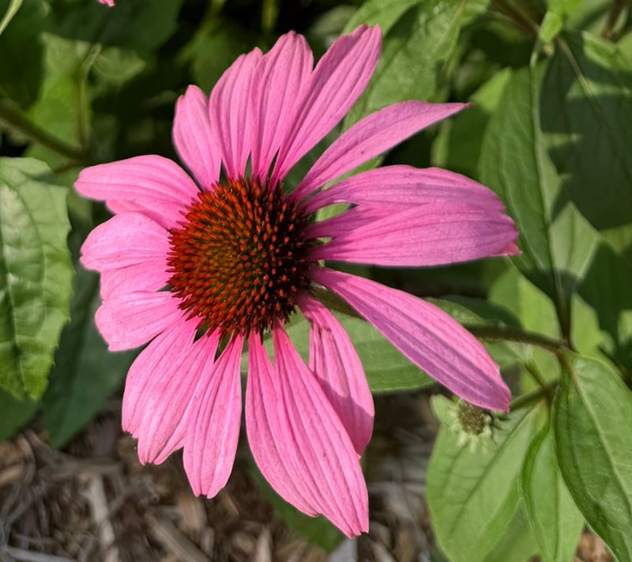

Purple coneflower
Echinacea purpurea (L.) Moench

2 of your photos · 1 reference image
About this species
Echinacea purpurea, the purple coneflower, is a flowering plant in the daisy family (Asteraceae) native to moist prairies, meadows and open woodlands of eastern and central North America. It is a hardy herbaceous perennial that grows to about 120 cm, with rough, lance-shaped leaves and single flower heads held on long stems from midsummer into early autumn.
Each head carries drooping pink-to-purple ray florets around a raised, spiny, orange-brown central cone, which gives the genus its name, from the Greek echinos, a hedgehog. It is widely grown as a garden ornamental, is visited heavily by bees and butterflies, and its seed heads feed goldfinches through autumn if left standing.
Care sheet
For zone 6b · generated once for this species · editLight
Full sun
Tolerates light afternoon shade
Water
Low once established
Weekly in the first summer, then only in drought
Soil
Well-drained, average
Dislikes wet feet in winter
Hardiness
Zones 3–8 · fine in 6b
No winter protection needed
Fertilizing
Rarely
A layer of compost in spring is plenty
Dormancy
Dies back after frost
Cut stems in late winter, or leave seed heads for birds
In your collection
3 specimens · 2 locations
Front bed coneflower
Front bed · arrived May 2019
Last: bloomed Jul 3

Mailbox patch
Mailbox bed · arrived May 2024
Last: photo added Jul 12

Rain garden clump
Front bed · arrived May 2024
Last: watered Aug 20
Lineage
Propagation links build a family tree. A cutting, a division or an offset points back to the plant it came from.
Front bed coneflower
Original · May 2019
Mailbox patch
Divided · May 4, 2024
Rain garden clump
Divided · May 4, 2024
Relatives you already have
Same genus · Echinacea
Pale purple coneflower
Echinacea pallida
1 specimen · Side bed
Only one other Echinacea so far
Relatives come from GBIF's genus and family groupings, matched against your collection.